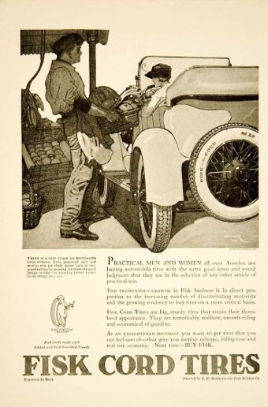
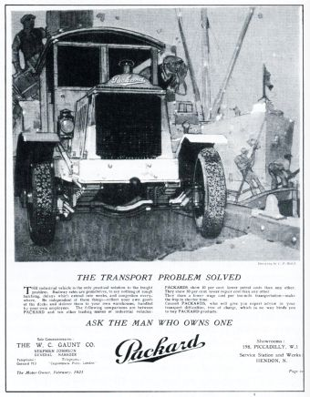
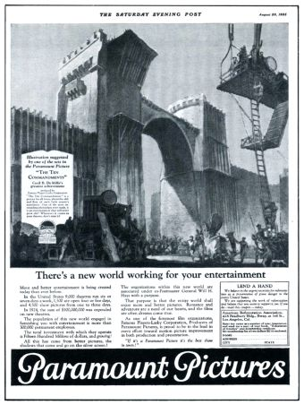
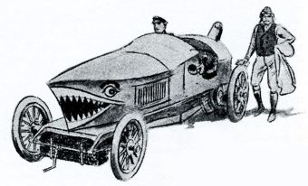

Clarence Peter Helck was born on June 17, 1893, in New York City to Clara Brandt Helck and John Helck.
I am sure I wanted to be an artist from the beginning. This prime urge was intensified during school days when I had encouragement from drawing teachers while accumulating less than passing grades in most of the other subjects. I got by in chemistry only because my full-color sketches of our laboratory experiments intrigued the department head. He was a weekend painter, having his own studio not far from the school.
Even before 1900 I was drawing locomotives and trains. Inspirations were close at hand in New York City at that time. The New York Central's double track along the Hudson River was active with both freight and passenger service. Thrills were close at hand with the twice-daily run of the commuting express, The Dolly Vardon, pulled by a sprightly little 4-4-0. Steam, of course. Then east of Central Park was the Central's four-track system. Emerging in glorious roar amid steam and smoke from its Park Avenue tunnel were several hundred trains daily. Even New York's celebrated elevated railways were powered by steam. Over this complex project three thousand trains hauled six hundred thousand passengers every day. Small boys in New York, with or without talents in drawing, were happily aware of all this smoke-belching activity.
Then came the Automobile. In 1903 1903one of these contraptions parked at any curb was immediately surrounded by the inquisitive of all ages. If left unattended, the juveniles kicked the tires, explored the controls, honked the bulb horn and then scattered swiftly upon the return of the owner or chauffeur. All cars in motion were greeted by young voices bawling "Get a horse!"
An early Helck, drawn at age 13.
By that time my drawings still favored steam engines, but autos were cutting in seriously. However it was in 1905 1905when a kind providence supplied the makings of a true auto addict, with consequent passion for depicting this specie. A well-to-do cousin (whose father owned a Rambler) visited us. At his departure he presented me with copies of Motor Age and The Automobile that carried the illustrated reports of the recent Gordon Bennett Race in France. Then shortly after came the day when an exhaust-barking Simplex stripped chassis pulled to the curb on our street. Its driver gave a warning glance at the swarm of small boys converging on the scene, and then entered the doorway of number 118. On his subsequent return and being assured that the swarm had respected his dissuasive glance-even to abstaining from testing the bulb horn-the driver sensed the appeal in the eyes of the onlookers. Arthur Gilhooly and I were invited to share the front seat (sturdy soap box) and two companions permitted to cling to the rear gas tank attachments. Followed a thundering get-away and a test run through Central Park and up the steep grade of upper Lexington Avenue.
The young driver proved to be Al Poole, already known to me by reputation. He had been riding mechanic for popular Joe Tracy in the 1904 and 1905 Vanderbilt Cup Races, would ride again with "Daredevil Joe" in 1906 and later, as driver, became the record holder (with Cy Patschke co-driving) in 24-hour racing.
This little spin on the naked Simplex, those that followed, the gift from my cousin stimulated my interest in portraying cars, fast and noisy ones preferably. I contrived ways of including such in my drawings for the school's monthly magazine and its yearbook, on both of which I was art editor. Another factor in shaping future art objectives was the 1906 1906Vanderbilt Race. Here I saw my new-found friend Poole crouched beside driver Tracy in booming flight down the oil-soaked North Hempstead Turnpike. Who could have guessed that the 13-year old witnessing his first auto race would many years later own this very car, the Bridgeport-built Locomobile widely known now as "Old 16".
Exide Battery, circa 1917.
I had also been inspired by the display of spirited racing prints by French artist E. Montaut in Brentano's window. I thrilled to the distortions that added so much to the aspect of speed and to the color that hinted at the grandeur of European racing. I was no less interested in the work of a handful of American artists
Ernest Montaut (1878 - 1909),
Edward Penfield (1866 - 1925),
Walter Appleton Clark (1876 - 1906),
Louis Delton Fancher (1884 - 1944),
Robert John Wildhack (1881 - 1940),
Adolph Treidler (1886 - 1981),
Adrian Gil-Spear (1885 - 1965)
who found the automobile an irresistable subject. Edward Penfield, famous poster designer, emerged from his long obsession with fashionable horse-drawn vehicles and produced equally stylish motoring covers for Collier's Weekly. Another Collier's headliner, Walter Appleton Clark, chose such drama-laden subjects as the Gordon Bennett and Vanderbilt Races. Indeed, Pierce-Arrow advertising in the 1908-1912 period employed the talents of a remarkable group of poster artists: Wildhack, Treidler, Fancher, Penfield, Gil Spear, others. These ads were a powerful influence. They still look good to me today.
During summer vacation, 19111911, I had my first formal art instruction at the Arts Students League on West 57th Street, a mere 70 yards from Broadway's "Auto Row". Nearest of the salesrooms was Fiat's, hung with Montaut posters, and where on occasion I glimpsed the great Ralph DePalma and the lesser great Ed Parker. Around the corner was the U.S. Tire Building where observing eyes focused on others of the Row's distinguished personages: Joe Tracy, Alfred Reeves, Fred Wagner, Fred Moscovics, Ed Korbel. North and south were the expansive showrooms of the finest domestic and imported cars. In front of them at the curb were their "demonstrators" which included Peerless, Packard, Lozier, Palmer-Singer, Simplex, Stearns and, personally more appealing, Renault, Panhard, Mercedes and other exotic foreigners. Art study in this environment left its mark.
Came an unexpected job 1911 - 1915on the art staff of New York's largest department store, so I left high school, not unhappily, in my third year. From Autumn 1911 to Summer 1915 (a long stretch in the eyes of youth but a mere split-second from present perspective) I had art staff jobs with eight firms. This seeming transience was due to, 1, better offers elsewhere; 2, seasonal layoffs; 3, my refusal to punch a time clock and, are the case if smaller department stores, declining to sell gents' neckwear during the Christmas rush. Two jobs were with movie produclng companies, Lubin in Philadelphia and World Films in New York, where I produced posters which, it was hoped by my employer's "would elevate poster standards" in that tumultuous entertainment fleld. That I was fired by World's Louis Selznick after two weeks suggests that the standards had not been elevated.
Left and above: Fisk Tire, 1921.
1913The only one of the eight jobs that related to cars was that with automobile press agents Korbel and Golwell. I had won the Poster Competition for the Brooklyn Art Show, and these gentlemen offered me the post of "Art Director" in the advertising agency they had just acquired. Such was the scale of operatlon that the only art direction pertained to my own work, drawings for such forgotten clients as Motometer, Allen Tire Case, others still more remote. However, before my bosses were legally restrained from operating in both press agentry and advertising (deemed as mortal sin), and because of their handling the publicity for 24-hour Racing, various endurance tours and the New York Auto Show, I found myself orbiting in a most agreeable atmosphere. It was cars every minute for the six months I was with K & G. Eight jobs within four years plus increasing outside work had supplied experience and confidence and by 1915 1915 I felt I was ready for freelancing. That Summer I took my Mother to California, and, while attending the lavish Panama-Pacific Exposition, trod those palaced and palm-lined thoroughfares with reverence. Four months earlier the Vanderbllt and Grand Prlze races had run over a circuit within these magnificent confines.
Cause for embarrassment?
1917
The jump into freelancing had its risks, but I contrived to keep busy with movie posters for Universal Films, furniture drawings for department stores. My brother Henry's
Peter Helck's older brother, Henry J. Helck (1889 - 1973): in later life he was a branch manager for the New York Bank for Savings. He lived in Yonkers, NY, with his wife Sadie and their two children, Bernice & John. Although seldom mentioned in these memoirs, Henry and Peter were extremely close.
 job hours permitted considerable soliciting of New York advertising agencies which resulted in national advertising assignments in the automotive field: Republic Trucks, Exide Batteries. Hoping to climb to the top fast, I submitted a cover sketch at prestigious Collier's Weekly, a portrayal of DePalma's new Mercedes for the Indy "500". As Col. Patterson was the owner of both Colller's and the Mercedes this seemed opportune. Its prompt rejection proved otherwise. 1916Better luck was had with a cover sketch for the new Sheepshead Bay Speedway Program. On rare occasions, unfortunately, one of these covers turns up to embarrass its maker.
job hours permitted considerable soliciting of New York advertising agencies which resulted in national advertising assignments in the automotive field: Republic Trucks, Exide Batteries. Hoping to climb to the top fast, I submitted a cover sketch at prestigious Collier's Weekly, a portrayal of DePalma's new Mercedes for the Indy "500". As Col. Patterson was the owner of both Colller's and the Mercedes this seemed opportune. Its prompt rejection proved otherwise. 1916Better luck was had with a cover sketch for the new Sheepshead Bay Speedway Program. On rare occasions, unfortunately, one of these covers turns up to embarrass its maker.


Although my brother's efforts were limited to about six hours weekly, his personality and salesmanship brought substantial results. With our entrance into the Kaiser War he enlisted in the Navy immediately. 1918I did likewise considerably later by which time I did the first of a long series for Fisk Tires. Art Director Burr Giffen (creator of the Time-to-Retire urchin for which he received $10) became a major patron, and this connection portended much for the future. Upon my Navy discharge I resumed with Fisk, and in late 1919 1919was called in to assist on an extravagant project. Fisk had envisioned a series of 24-sheet posters to be executed by the top artists here and abroad. Maxfield Parrish had already finished his. The great British muralist Frank Brangwyn had agreed to do one, but matters were at a standstill as to subject. His first sketches had portrayed a world at war, but now the war was over.
The Motor Owner, London, August, 1920.
At that time Brangwyn enjoyed great international recognition. Along with most of my fellow artists I marvelled at his genius and still do. I was asked to create a sketch in which the master could employ all the pageantry and riotous color for which he was celebrated and then go abroad to enlist his interest. 1920I found this great man, in the midst of a huge mural, kindly-disposed to American artists. His mural assistants frequently had been Yankees. He had also given private painting instruction to "that American millionaire motor chap"
Charles B. King,
Charles Brady King (1868 - 1957): entrepreneur, inventor and artist. He built the first automobile in Detroit and was mentor to Henry Ford and Ransom E. Olds.
known to all of us. Brangwyn pronounced my sketch as "saucy" and agreed to follow through . . . on condition that I lay it out in full scale in rough form in color prior to taking it on.
This condition would alter my plans, that of serving in reconstruction work in badly shattered France. On hearing this Brangwyn advised, "Reconstruction in France? Rather reconstruct your art, what?" Few young artists could have ignored this advice, particularly as it inferred his interest in my own work and thus just might offer prospect of serving as his mural assistant. Besides, 1920I had fallen in love with London.
(left) Packard advert, London, 1920. (right) Cover for The Motor Owner, London, July, 1920.
(above) Pen and ink drawing with transparent coloring, London, circa 1922.
I found
lodgings close to Brangwyn's studio in Hammersmith
Helck's studio was at 93 Brook Green, London W6. Brangwyn's London studio was at Temple Lodge, 51 Queen Caroline Street, Hammersmith
, set about getting the Fisk panel laid out, followed the advice on "reconstructing my art" via much drawing and painting from nature.
The results were always shown to Mr. B, and I profited greatly by his criticisms. I was never happier, but the prolonged stay was diminishing my savings. I decided to solicit work from the publishers of the plush motoring monthly The Motor Owner. Luck was at hand. The Art Editor knew my work. The interview ended with afternoon tea and an order for six full color covers. This publication also serviced its advertisers with artwork and much of this came my way, all in full color, for such firms as Packard, Crossley, Napier, Sunbeam.
With April came the reopening of Brooklands vast motordome after its wartime siesta. The sight of this enormous arena was breathtaking, more so than most of the racing because of the British fetish for handicapping, a throwback to their equine age. However drivers soon to become world famous were regulars during that season: Malcolm Campbell, Henry Seagrave, Tim Birkin. Already famous as trans-Atlantic flyer, Harry Hawker also joined Brooklands racing elite. The cars offered startling extremes from spidery Gregoires to massive 19-litre hybrids plus a sprinkling of seasoned G.P. Dietrichs, Indy Sunbeams and revamped Essexes. I made trackside sketches from which I developed more finished drawings for that oldest of motor journals, The Autocar. But my most cherished Brooklands experience was as passenger on a ferocious 30-98 Vauxhall driven by Ivy Cummings, the best-known woman driver of that time. In gratitude I made her a small painting of her Vauxhall.
Covers for The Motor Owner, 1923.
Meantime the Fisk painting hung in suspense, awaiting Brangwyn's wind-up on his mural. But prodding messages from Fisk and plans to meet my mother in Spain induced the master to promise action shortly. This would be at his country place in Sussex. I spent a week with him there, painting landscapes, sketching Gypsies. Only on the final day could I cable New York, "Brangwyn at work on Fisk painting."
There followed a delightful month with my mother in Spain. After her departure I remained in Madrid, drawing constantly, studying the masters in the Prado, planning further travels. With diminishing funds I sought means of revenue, and, through the kindness of a young Austrian (somewhat mysteriously known as both Herr Taubs and Senor Reyes) who had wide connections, was introduced to Count Enrique Traumann, Benz concessionaire for Spain. For this uncordial personage I made a few drawings for Benz advertising. From other sources I did a series for Gaulois Tires and a full color program cover for the Royal Spanish Opera. This was pretty good going for a foreigner unknowing in the language and it enabled travel to Morocco, Algiers, Sicily, Italy and back to London.


Packard Trucks, London, 1920 and 1921.
Bergougnan Tires, Madrid, 1920.
At year's end the Brangwyn painting arrived in New York. I followed shortly and was gratified to see how my thinly-painted "lay-in" had been expanded into a pageant of thickly-applied pigment of exquisite color. All that remained of my contribution was the automobile.
The Fisk Panel
1921As a result of the Brangwyn association my interest veered toward mural decoration. A couple of awards at the Beaux Arts for mural compositions gained the post of mural assistant to William DeLeftwich Dodge, a giant of a man whose impressive murals at the Panama-Pacific Exposition had bowled me over in admiration. The job at hand comprised two 12 x 60 foot panels for the Nebraska State Capitol. Dodge's demands upon an assistant were extreme, from daylight to dusk, in studio temperatures frequently near 100. But if he at age 54 could take it so could I, his junior by many years. Upon retiring each night he'd stand at my bedroom door, his huge bulk clad in a nightgown, a burning candle in his hand like a king-sized Fisk Tire Baby and proceed to reminisce about fellow painters and his student days in Paris. Those six months were a grand experience.
Benz advertisemnt, Madrid, 1920.
Spain called again, 1923as did England, and now married,
Priscilla Smith Helck (1899 - 1988), originally from Belfast, Ireland, was married to Peter Helck in September of 1922.
Priscilla and I settled in a studio in Hammersmith. I was painting seriously now, still favored with Brangwyn's interest and encouragement. The way to British recognition was then via the Royal Academy. I submitted three works, one gaining acceptance and given some space in reviews. "pay work" was resumed with full page drawings of London's markets and Cockney characters for the Graphic and Bystander weeklies, and my motor clients were still active. This fact permitted a ten-week tour of the British Isles, my wife, my mother, myself and enormous piles of painting gear crammed aboard a Ford-T tourer. Our single misadventure happened in the only thoroughly unlovely town in Cornwall, St. Blazey. On descending a hill, a horse being driven by an elderly lady took fright. I stood on everything, came to an abrupt standstill, but vital Ford parts were strewn over the road. St. Blazey's only garage and its solitary hotel were owned by the same profiteering gentlemen. This unfortunate coincidence was costly in time and money, and is not, please note, characteristically Cornish. All in all it was a grand tour and a highly productive painting spree.
Benz advertisemnt, Madrid, 1920.
1923At Brooklands in 1923 the giant hybrids, often comprising surplus aero engines in vintage frames, thundered spectacularly over the rough high-pitched bankings. Imagine, if you can, a 127 x 178 mm Liberty V-12 power plant of 27,059 cc and a 1907 Benz gearbox nested within an Edwardian chassis, galloping manfully on the straight but becoming an unwieldy fearsome pile of metal on the steep slopes of Brooklands. Such was motor racing in England circa 1923.
Saner by far was the French Grand Prix at Tours, and memorable also for the sole British triumph in G. P. racing before that exalted designation came in for indiscriminate use. Here Seagrave's 2-litre Sunbeam outlasted the trio of very fast blown Fiats. Here also Voisin and Bugatti entered weirdly-designed machinery, non-conforming in the fullest sense. As a spectacle Tours fulfilled the image of Continental racing as set forth by Jarrott and Gerald Rose in their unforgettable books.
While we were abroad things had happened in New York. The beautiful old
studio building
106-108 West 55th St., NYC.
had been sold to the Grand Street Boys Association, a club of successful men who had fought their way to affluence from the ghettos of New York. 1925I moved to less inspiring quarters in the Miller Tire Building where, amid the pungent fumes of rubber, I did a series of ads for rival tire makers Kelly-Springfield.
(left) Cadillac advert and (right) La Union cover, Madrid, 1920.
In 1926, 1926in harmony with those expansive times, I acquired one-half of the upper floor of an
old carriage house
The studio at 206 East 33rd St. New York City
 on the East side, and had its 30' x 75' area converted to studio needs. The six years in this grand shop are a cherished memory. Soon I had agreeable next door neighbors, one of them being Dean Cornwell, at that time America's top illustrator and already on his way to becoming equally famous as a mural painter. These were the rocketing stock market days and the contagion afflicted everyone from bootblacks to corporation heads with artists, unfortunately, included. Work was plentiful and clients generous. On occasion an Art Director, well pleased with a job, would phone his satisfaction with, "Pete, that drawing went over big with the client. I'm adding a couple of hundred to your bill!" There was a three-year campaign for Tarvia, another of equal duration for Ford Trucks. There was a terrifying assignment for Canadian National comprising full color paintings, half-tones and line drawings, about 125 pieces in all. The deadlines, necessitated 17 hours a day for several weeks, a long hard pull.
on the East side, and had its 30' x 75' area converted to studio needs. The six years in this grand shop are a cherished memory. Soon I had agreeable next door neighbors, one of them being Dean Cornwell, at that time America's top illustrator and already on his way to becoming equally famous as a mural painter. These were the rocketing stock market days and the contagion afflicted everyone from bootblacks to corporation heads with artists, unfortunately, included. Work was plentiful and clients generous. On occasion an Art Director, well pleased with a job, would phone his satisfaction with, "Pete, that drawing went over big with the client. I'm adding a couple of hundred to your bill!" There was a three-year campaign for Tarvia, another of equal duration for Ford Trucks. There was a terrifying assignment for Canadian National comprising full color paintings, half-tones and line drawings, about 125 pieces in all. The deadlines, necessitated 17 hours a day for several weeks, a long hard pull.
The Saturday Evening Post, March 7 & March21, 1925
The Saturday Evening Post, April 4 & April 18, 1925
By far the most satisfying commission was for the Steinway Collection which housed the works of eminent American and European artists. I was asked to render my personal interpretation of Sibelius's Finlandia For the single heroic figure I used Gustaf Pierson for the model because of his startling resemblance to the great Finnish runner Nurmi. However, at no time did I dare mention the theme of the painting. Pierson was a Finn-hating Swede!

(left) Finlandia for Steinway. (right)The Saturday Evening Post, August 29, 1925.
This was done for my self-gratification in 1926 and is the painting that appeared in Fortune in its first year of publication. I'm quite sure that Henry Luce thought the fee of $100 excessive. It measures about 4 x 5 feet, was rendered with Martini tempera, and was shown in several exhibitions.
The Old Barracks, Trenton, NJ (U.S. Royal Tire Ad) The Saturday Evening Post, August 18, 1928.
1927My good wife Priscilla and I went abroad in 1927 and traveled in Italy extensively with a lovely little 509 Fiat Tourer. The means by which a driving license was acquired in Rome was profoundly devious. We were advised by a linguistic courier that "the man to see" was Signor Clemente Paoli, an elevator operator at the Court of Justice. With extreme misgivings I followed instructions and turned over passport and other credentials to this jolly little gentleman during a "conference" in his elevator between the third and 4th floors of the Court House. The constant buzz of impatient would-be passengers, some of them black-robed Justices, was completely ignored during our informal transaction.
Series for Standard Oil of New York, 1926.
The following morning I returned by appointment, was given a "Driving Test" in the office of a harassed office clerk, said test being made while seated in a chair where I demonstrated the flexibility of my feet for pedal action and the firmness of my grip on a steering wheel. I passed with honors. Matters were squared with buoyant Clemente, my personal papers returned, and our tour got underway.
Painting the grand landscape was the number one objective, but motorcar interests were to be enriched also. We were in time for the first running of the great Italian annual, the Mille Miglia, and became immediately aware of the hazardous conditions under which this race was conducted. The roads were not closed. Normal traffic, although warned, was not restrained from using them. As for the spectators, here was the same disregard for safety as had prevailed at the old Long Island Vanderbilt Races, only more exuberantly displayed. The roaring O.M.s, Fiats, Alfas and Italas, skimming miraculously past wine carts, sedate limousines and the intruding crowds, were we soon learned, completely in character with Italian highway deportment.
American Book Company calendar, 1927.
En route to Milan we spied a sleek red P-2 Alfa sparkling in the sunshine at a filling station. Our interest in this beauty effected an invitation for a spin from the prideful attendant. I'll never forget the terrific impulse of its acceleration, or its deceleration either. After the exciting ride the driver proudly removed the seat cushion I'd been sitting on, pointed to some faded blood stains, and disclosed that the ex-owner had perished in an appalling crash with this car!
The New York Telegram, July 26, 1927.
As Monza's famed circuit could be traversed for a slight fee we took the little 509 around for a few laps. Loaded with luggage and painting materials, we managed to get the needle up to 100 kil. But we were not always that volant. Once on a long upgrade in the Abruzzi Mountains the engine sputtered then died. We were out of gas. Daylight was fading. A group of small boys offered advice, unintelligible to us. Suddenly we heard the healthy roar of an approaching car ahead. It topped the crest of the grade as can only Alfas driven by audacious young Italians. He pulled up with a screech, having noted my good looking wife, and another "transaction" was underway. Alfa petrol was drained, bottle by bottle, into the tank of the Fiat. In gratitude we insisted on presenting our rescuer with a quart of Spumante. Off he went with a wave and a roar. But before we reached the next town, a mere mile from the crest, we were again in trouble. It took the next morning to cleanse the Alfa's dregs from our fouled feed lines and carburetor!
The Saturday Evening Post, May 12 & May 26, 1928
Back in New York Coolidge Prosperity and those "good times" still prevailed. Pay work was now shared with serious painting. I was sending to exhibitions, winning a few awards, had a couple of oneman shows of landscapes and portraits and resumed study in private classes at night.
While1930 - 31 engaged with the Ford truck campaigns the weirdest sort of coincidence threatened the cordial relationship I enjoyed with N. W. Ayer, Ford's advertising agency. One of the pictures, to be rendered in two colors, purple and black, had to show a Ford van unloading at a swank cleaners and dyers in a smart suburban town. I chose Bronxville, New York, then as now filling these qualifications. While sketching suitable store fronts I encountered an old high school mate. Past incidents were recalled, old friends discussed. I asked, "What ever became of that big footballer Mittell?" He told me enough for that name to stay in mind for several days. With the drawing near completion I considered adding the name of a firm on the van's polished panel, hit on the name of the footballer Mittell but discarded it as being overly Teutonic. The derivation, F. Martell, looked and sounded more like fashionable suburbia.
Two months later N. W. Ayer phoned. Had I seen Walter Winchell's column? I replied I never read his stuff. "Well, read him this morning" was the advice from Philadelphia. "Then call me back." Winchell had written about as follows. "Perhaps the artist responsible for the Ford Truck ad in the current issue of the Saturday Evening Post had his tongue in his cheek, but it is no laughing matter for the widows and orphans of those slain in the Purple Gang warfare involving Detroit's cleaning and dying industry." He further disclosed that the Purple Gang leader was a notorious racketeer serving time; his name, F. Martell.
The Saturday Evening Post, December 6, 1930 & January 24, 1931
There were a few worrisome days for all concerned in Ford advertising, but my explanation was accepted and I continued to work on the series. As expected, Winchell failed to print my explanation. Not much later the great man's chauffeur-driven limousine very nearly clipped me while I was crossing West 50th Street.
The Saturday Evening Post, February 21 & May 2, 1931
While occupying the stable studio I came to know personally one of my boyhood idols, Joe Tracy of Vanderbilt Cup fame. Before becoming aware of his devious skills in practical joking I gladly accepted his invitation for a weekend of camping in the Poconos. Fortunately not for a longer period as it proved to be 48 hours of misery. I met him at his laboratory in Rutherford a few minutes after the appointed hour. H is displeasure with this tardiness was undisguised. He then prepared to lash several lengths of 2 x 4 beams between the fenders of my DuPont convertible, apparent necessities for our camping expedition. Upon my mild protestations the stuff was returned to the lab.
Upon setting off I was instructed to follow closely his guidance through the towns en route. His Chevrolet Coupe had accelerative capacity well above that of the DuPont, but I did my best. I was close enough to observe the old boy lifting a canteen to his mouth, then turn his head to the left and eject a spray which smacked against my windshield. The wipers were useful for several miles. I followed my guide into a busy town. As the Chevie exited at the far end, I was stopped by the police for running the wrong way on a one-way street. By the time I had eased out of this situation my host was in foot-tapping impatience because of the precious time lost.
The Saturday Evening Post, April 19, 1930
On arrival at the campsite at dusk, a bleak windy spot, my ineptitude in rigging tents was obvious so I was assigned the task of placing our provisions in "the only safe place around here" the branches of a nearby tree. I had hoped to hear lengthy reminiscences of his racing days but boyhood hero was sullen and uncommunicative. Then in Indian fashion we followed a trail through the woods where every footfall on the blanket of old leaves made conversation impossible. Mr. Tracy now became highly eloquent and also highly annoyed with my repeated, "I didn't get that."
I was awakened after a miserable night on the hard ground by stones hitting the canvas. "Wake up, man," came the command "You've got to see the sunrise." The weekend was survived. I arrived home completely exhausted, also bewildered. Tracy's "short cut" directions for returning to New York had added miles to the trip. Nevertheless we became fast friends but all future camping invitations, offered with a smile, were just as amiably declined.
Painting for Packard advertisement which ran in The Saturday Evening Post, October 8, 1932
Thanks to Old Joe I learned of the whereabouts of his old racing comrade, the young Simplex tester from 96th Street days, Al Poole. Meeting him again after 20 years was the renewal of a firm friendship lasting until his death in 1959, seven months after that of Tracy.
1929Came the Crash, the end of the phony prosperity, shortly to eradicate security for millions. My own work continued for a spell, then dropped off gradually. 1932Having purchased a farm in the country needing costly renovation of house and barns, I felt the need of giving up the spacious East Side studio for a less expensive one on 47th Street. In company with so many others, our investments were sadly shattered.
During the boom years a few old cars had been acquired; sounder investments by far than the so-called securities of that day. These consisted of a 1904 chain-drive Mercedes with an unsympathetic 1915 White touring body; a 1907 Renault Town Car which had belonged to Albert R. Shattuck, past President of the Automobile Club of America. The Mercedes today, fully restored with authentic coachwork, is owned by likeable VMCCA Member Roland Beattie. The Renault, due to Joe Tracy's persistent efforts on behalf of the Thompson Products Car Museum, is now in that Collection's present plush environment. For those interested in inflationary trends, I think the Mercedes cost $200, the Renault $75. Another purchase at that time, a Mercedes-Knight Tourer of 1921 (still ours) cost $500.
Of my 47th Street Studio I remember only that it was too small, that I had no immediate artist neighbors and that the ground floor premises were occupied by a benevolent institution, The Opportunity Shop, where donated merchandise was offered at very low figures. The Depression was at its worst. The Bank Holiday was on. Even the non-profit Opp Shop was feeling the stress. Its Manager knew of my interest in early cars. Was I interested in an elegant Brewster Town Car at $100? I felt obliged to decline. Apparently no on else had $100 to spend so recklessly because this good chap would appear from time to time with easier terms', $75, then $50! On the fourth occasion, at $35, I decided yes. I still recall his smiling rebuke, "You chiseler," justifiable perhaps from his point of view.
1934With improving conditions, a far better studio was leased on
East 53rd Street
10 East 53rd St. NYC. Helck occupied this studio until the 1960's.
opposite Mr. Winchell's hangout, The Stork Club. Shortly after locating here and while having lunch with my wife and old friend
Dean Cornwell
Dean Cornwell (1892 -- 1960): American illustrator and muralist.
, the latter mentioned his forthcoming trip to Italy for the purpose of studying the Florentine frescoes preparatory to a mural for which he had been commissioned. "Any chance of coming along?" he asked me. My understanding wife replied "Why not!"
And so it came to pass that Dean, his V-8 Ford Convertible and myself sailed to Europe. We docked at Liverpool, the car going on to LeHavre. We spent a happy day with Brangwyn (now Sir Frank) in Sussex, thence on to France to collect the V-8 for a few days in Paris prior to Italy.
Dean Cornwell painting in Italy
This pause permitted attending the LeMans 24-Hour Race during those magic hours from dusk to the blackness of night. Britain, as so often, supported this event liberally, this time with 23 entries consisting of squads of Rileys, Astons, MGS and Singers. Opposing were 17 French starters and a handfull of Alfas from Italy, two of the latter in the hands of topflight Britishers. Drama is always to be had with fast cars crashing through the night, and at LeMans is the extra bonus of the carnivalesque. But for this viewer, then and again in 1951, deep gutsy enthusiasm was lacking. I've painted the subject three times, never with marked gusto. Certainly the finest cars and pilots evoke the plaudits of tens of thousands year after year, and no one views their astounding mileages as less than miraculous. Above 2800 miles now! For me the old Twice-Around-the-Clock grinds at Brighton Beach and Morris Park where anything between 1000 and 1250 miles was record-going had higher appeal, historically and sensually.
The frescoes in Florence held Cornwell's attention for ten days. My interest was the dynamic landscape further north in that mountainous area just south of little San Marino, the mountain Republic. Thus the V-8 was generously turned over to me and I put up at a miserable little (and the only) hotel in Novefeltria. Here and in the grand neighboring hills I painted every daylight hour, awakened each morning by operatic arias sung by the town's street sweeper. Poor old man. In time he was forbidden to fill the morning with song and promptly died!
Friendships were made among the locals, three of whom had once lived and worked in the United States. All longed to return, but Mussolini was not letting potential soldiers out of the country. In fact, during my stay and unknown to me had been the crisis of
Brenner Pass
This is probably a reference to the "Austrian Crisis" in July 1934 when Nazi agents assasinated Englebert Dollfus the Chancellor of Austria. Mussolini was nominally supportive of Austrian independence and the Brenner Pass was the route that Italian troops would have used to enter Austria.
. I was aware, of course, of the army contingents that suddenly occupied Novefeltria, but did not know the significance of this mission.
One day, while painting on a hilly roadside, a corps of Bersagliere came pumping up the steep grade on push-bikes, their faces flushed and sweating under gasmasks. Zipping past them in a cloud of dust was an officer and his driver on a motorcycles sidecar combination. Upon spotting me the cycle was brought to a throbbing standstill. I'll admit to some misgivings when the officer approached, but was immediately relieved on being addressed in English and learning about his own painting aspirations. Apparently there was nothing suspicious about a foreigner sketching in this area of army occupation. During our amiable chat, with heavy armored vehicles now grinding up the grade and supplying a more purposeful aspect to these maneuvers, the sidecar driver was contentedly picking flowers in the nearby field.
When leaving this paintable countryside to join Cornwell in Florence, my new-found friend Umberto came to see me off. As the Ford was being refueled for the journey over the Passo del Muraglione Umberto reported the comment made by the man at the pump. "He says he is so sorry to see you go away. He likes your car because of its eight thirsty little cylinders!"
Economic conditions at home were improving and upon my return time was shared with advertising, magazine and exhibition painting. My first love, steam locomotives, got a hefty renewal at the 1939World's Fair where the finest examples of this species, past and present, were beautifully displayed. I did a set of tempera paintings when these mammoths were made even more impressive by the floodlighting at night. These were given a one-man show at a Fifth Avenue gallery. None sold. I gave a few to admiring rail fans and was prepared to present one to that excellent railroad historian, the late Lucius Beebe, but his critical inspection of these works evoked nothing but profound silence.
(left and above) 1939 New York World's Fair
Nearing completion now was the fabulous Roosevelt Raceway where Vanderbilt Cup Racing was to be revived. 1936I hoped to be of some use in designing posters or program covers but was given a brisk runaround at Steve Hanigan's press bureau. I decided to try the Raceway's General Manager, the man whose dream of revived Cup Racing was at a point of realization, George Robertson, the Vanderbilt winner of 1908. He was not exactly displeased upon learning that I had seen him in this race and many others, but was enormously surprised and delighted to know that his old Locomobile No. 16 still existed. He had long believed it forever gone.
This brief interview began a lasting friendship. It also inspired the Raceway to contact the owner of the Loco,
Joseph Sessions
The Sessions Foundry in Bristol, CT, owned by Joseph Sessions, made many of the castings used on the Locomobile race cars.
, foundry man of Bristol, Connecticut. Arrangements were made for a one-lap exhibition run just prior to the start of the revived Vanderbilt. The interview also resulted in my doing a poster and other jobs for the two Cup Races, 1936 and 1937.
Robertson did indeed drive that exhibition lap and then wondered how he'd been able to "handle the brute" for four hours at high speed 28 years before! But the revival was no howling success. Because the pretzel-like pattern of the circuit demanded moderate pace, sports writers commented caustically about the mild mph achieved by the world's top participants. This speed, said they, was uniformly bettered by the customers who drive to the race in their own cars.
By 1937 1937the circuit had been greatly simplified, permitting 160 mph and above on the finishing straight. Unlike the Italian triumph of Nuvolari and Alfa the year before, this race, signifying the German takeover in classic racing, was won by Rosemeyer's Auto Union with Seaman's Mercedes a close second. As before, our contenders were nowhere although Rex Mays's 3rd place in an elderly 8-C Alfa gave a degree of comfort to American enthusiasts.
1934I think it was at about this time when a hardy group of young amateurs, the Collier brothers as prime movers, organized the Automobile Racing Club of America, later SCCA, and staged a so-called Briarcliff Race Revival. This was run over semi-private roads not too distant from the 1908 Briarcliff circuit. In spite of the few entries and the varied concept of what constituted sports car machinery (Rileys, Austin 7s, souped-up Overlands) these backyard G.P.s were spirited entertainment and initiated the trends that were realized at Watkins Glen a dozen years later.
My work in advertising art had by this time won the Harvard Award for an industrial series for Westinghouse; four Art Directors Medals in New York and similar top awards in Philadelphia, Detroit, Cleveland and Chicago. Now less time was given to work in the fine arts field. Sales in this category continued to be negligible. Besides, many of the new trends were a complete divorce from tradition to which my loyalty, wisely or not, was firm. I still believed in Brangwyn's edict "Go to Nature" so there were painting sprees locally and in New Orleans, Texas and Arizona, shared by my ll-year old son Jerry who displayed very promising talent.1941 However, as fine as it was, this Southwestern landscape thrilled me far less than had the mountainous regions of Spain and Italy.
Life magazine inside front cover, March 7, 1938
 The Saturday Evening Post, October 22, 1938
The Saturday Evening Post, October 22, 1938
Joe Tracy was now a frequent visitor at my New York studio, and he conducted some of his consultation and research projects at this address. Time and again he proposed we visit Mr. Charles B. King and other early-day auto personages, but my preoccupation with work prevented. I responded promptly, however when Joe suggested we run up to Bristol, Connecticut and have a look at the old Cup-winning Locomobile. We were cordially welcomed by Mr. Sessions and led to the nest-like garage built expressly to house the veteran. Legend told of the proud owner's annual spin, the annual ticket for speeding and the twelve-month recess prior to the next penalization. The car was in excellent condition, and its existence prompted inquiries about the fate of the sister car, Tracy's reserve in the 1906 Vanderbilt and first in the 1908 running when driven by Joe Florida. Sessions believed its l6-litre engine had been installed in a boat and the chassis scrapped. Thus No. 16 was the sole survivor of the three racing specials designed by A. L. Riker for big time racing. The first, with a 7 x 7 power plant and built for the Gordon Bennett and Vanderbilt of 1905, had long since passed into oblivion. The fate, alas, of too many automobiles of historic worth.
The advent of the three major clubs, VMCCA among them, was the first significant step toward the preservation of early cars. Prior to this there had been far-sighted sentimentalists dedicated to rescuing forgotten relics. As early as 1936 George Waterman, Kirk Gibson and Paul Cadwell (all founding fathers of VMCCA) had already accumulated 200 antiquities. But it was the clubs, their publications and their meets that fertilized a minor hobby into a nationwide fanatical interest.
The date of my VMCCA membership is vague, nor can I remember the date on which I attended my first meeting of the New York Chapter. But I do recall vividly the warm greeting extended by Alec Ulmann, Dean Fales and Leslie Gillette. Perhaps the attendance was less than twenty, but the fraternal atmosphere was immediately evident, and one may be excused for stating that with the fantastic growth of our clubs much of the intimate companionship has faded. I never had the wish to serve officially in club affairs, but I have been anxious always to help with drawings and articles for the Bulb Horn, Antique Automobile and other club publications. In this connection, I got to know such good friends as John Leathers, Everett Dickinson, Walter MacIlvain and the equally agreeable staff members of the other club journals. Their dedication may be judged by the scope and quality of our magazines today. Our counterparts in England express their wonderment with "But how do you do it?"
 The Saturday Evening Post, circa 1939
The Saturday Evening Post, circa 1939 The Saturday Evening Post, circa 1940
The Saturday Evening Post, circa 1940
Upon the death of George Sessions1941 and through the established friendship of Joe Tracy with the Sessions family Locomobile "Old 16"
came our way
Jerry Helck's recollection of the purchase of the 1908 Locomobile race car:
Using Joe Tracy as intermediary, Dad offered George Session's widow $2,000, a significant sum in those days. There was one other serious bidder, James Melton, the actor and opera singer. Melton swept into Mrs. Session's small house, wearing a floor-length fur coat and placed a partially filled out check on her mantelpiece. He asked her to think about a price and fill it in when she reached a decision, and then call him. Apparently, the thrifty Connecticut housewife was so put off by Melton's Hollywood flamboyance and extravagance that she instead accepted my father's more modest offer.
Regrettably, I was not included in the trip to Bristol (in February 1942) to claim the car; that was my father, Joe Tracy and Ernests job. Of course everything took longer than anticipated and while Sessions had mounted lights front and back, they were Model T Ford era, and Tracy couldnt abide by my father's 30 MPH limit for more than a few minutes. But they did arrive without accident (until Joe grazed the stone wall at the driveway in Boston Corners, bursting a tire).
NOTE: the purchase price was previously reported here as $20,000, not $2,000.
. This was an important moment in life in Boston Corners, and it furthered our association with Old Joe. His visits here were more frequent, and we observed with deep satisfaction the pal-like comraderie shared by 12-year old Jerry and the 65-year old motor veteran. I'm sure the youngster gained much from this companionship.
Tracy came into VMCCA, was made Honorary Member and thoroughly enjoyed the status of rejuvenated celebrity. Consistent with this concern for racing's past, the New York Region organized a series of meets; Simplex Night, Vanderbilt Cup Night, Mercer Night, to which were invited guests who had known fame in days past: DePalma, Robertson, Ralph Mulford, Al Poole, Herman Broesel. Mercer Night brought several surviving executives of the old Trenton marque. All were stunned and unbelieving upon learning the current value of T-head Raceabouts.
1943With the war the ranks dwindled. Water Levino and Ed Bennett appeared when leaves permitted. Hemp Oliver and Austin Clark were far less available. The more elderly standbys, Leo Peters, Joseph Reutershan, Charlie Stich, Bob Bohaty, Sam Baily, Harold Kraft plus the exuberant Ulmann-Gilette team kept the New York Region moving. Jim Melton could be counted on for the Christmas Annual, one of these made memorable by his soul-stirring rendering of "My Boy Bill."
It was around 1942 1942when the Automobile Old Timers was founded, due mainly to the initiative of Frederick Elliott whose entire life had been spent in the regulatory provinces of automobiling. He had been the youthful Secretary of A.A.A. almost at time of its birth. His name is encountered on endless committees supervising trade practices, road improvement, all forms of motor competition. Whether or not A.O.T. was his inspiration, it was his wide acquaintance throughout the industry and his skills in enlisting support from those of influence that built this organization into sufficient membership to stage an annual luncheon attended by 500 or more A.O.T.s from all over the country.
Time Magazine, December 8, 1941.
At these luncheons, usually at the Hotel Roosevelt, citations were awarded to men renowned in the auto world, most of them truly "old timers." Charles Kettering, Julian Chase, Charles B. King, W. K. Vanderbilt, Jr., had been so honored, as would be this writer 24 years later. Consideration of similar recognition had been given Frank Duryea, an eventuality fraught with complexities because of the unsettled claim as to which of the Duryea brothers, Frank or the late Charles E., were to be credited with the building of America's first gas-propelled automobile. The feud had long and not always gently advanced. Among those on the rostrum this day was Frank Duryea. It seems likely that most of the guests were aware of the conflicting claims, but if not, were soon to be. Frank's newphew Jerry visited table after table in a petition drive to have his uncle's citation awarded posthumously to his father. In this crusade Jerry was brushed-off, for the most part good humoredly as he was generally liked and probably admired for his family loyalty.
The meal over with, attention was directed to the awards ceremony. When Frank Duryea was called to receive his, Jerry strode forth, faced the rostrum and heatedly protested this action. The big banquet salon was suddenly shocked into total silence. Frank's thin face paled. The proceedings were held in suspense. The tense situation called for immediate rescue. This was promptly given by arch-diplomat and pioneer automotive promoter Alfred Reeves. He poured on the proverbial oil with such tact that Jerry's retreat was possible without great loss of face as the presentation was made to his uncle Frank. The situation was further relieved by the hasty call for the next recipient.
All present had witnessed a bit of drama, involving human behavioral conduct, reaching an unforgettable split-second climax, and then brought under control by a suave and accomplished trouble shooter.
The Saturday Evening Post, March 27 & September 18, 1943
The Saturday Evening Post, circa 1945 and Army Transportation Journal, August 1945
During the early forties, the War years, most of my work was for clients closely involved in the war effort: Mack Trucks, G. E., Timken, railroads, air lines, Republic Steel and other heavy industrials. I was less lucky with work for various Government bureaus. Of many poster designs submitted, only two had been published. Work for the steel corporations was particularly attractive as it necessitated sketching within these thrilling environments, at times a bit hazardous. The year 1944 1944brought a turning point. As a freelance for 29 years, commissions for early motoring and racing subjects had been infrequent. Some of these have been referred to. The rest comprised a few fiction illustrations and a 3-year campaign for Champion Spark Plugs in which racing scenes were incidental to the giant display of the product, the plug.
The Saturday Evening Post, September 12, 1942
The Saturday Evening Post, October 17, 1942
The turning point came when Esquire asked me to contribute to their series, "Great Moments in American Sport." They had me down for Bobby Jones, Babe Ruth or Man of War. I countered with the Vanderbilt Cup. "But that's a Bridge tournament" was the Editor's rejoinder. It took a carefully-done sketch (on speculation) to convince Editor Geis that the first U. S. victory in classic auto racing, Robertson's and the Loco's win in the 1908 Vanderbilt, was indeed a great moment in American Sport.
The Saturday Evening Post, January 30, 1943
The Saturday Evening Post, May 1, 1943
With enthusiastic acceptance of the finished painting, I was immediately prepared to follow through and thus flashed Mr. Geis with a sketch, hopefully executed, of another "Great Moment", the 1912 Indy "500" where Depalma's Mercedes had led from the 10th to the 496th mile, faltered, then limped to a standstill. Driver and mechanic pushed the stricken car for a lap in a desperate but fruitless effort to win. The sketch was okayed and was the basis for six more subjects all close to the heart, and for which Founding VMCCA Member John Leathers wrote stirring commentaries. The set of eight were ably promoted in the magazine, by exhibitions of the originals in major cities (two of the paintings disappeared along the wayl) and by a limited edition folio, copies of which were presented to important people in the auto industry. This fortuitous gesture was, according to Esquire, largely responsible for Detroit's Golden Jubilee in 1946. Plans for this celebration were at the point of withering because of general apathy. However, a committee member produced this folio, showed it around with the resultant verdict "By Golly, there's still romance in the Automobile!"
The Saturday Evening Post, November 28, 1942
The Saturday Evening Post, January 23, 1943
Negotiations with Esquire had been unique and educational. At the outset I was assured of receiving their "top price." Although unknowing of Esquire's rates, the figure offered was well below that of the general magazine level. Upon approval of the preliminary sketch I was again assured of the "top price" now at a 50% increase above the first quotation. Laughingly I suggested resuming negotiations a bit later when this climbing scale could possibly escalate to an honest "top price."
The Saturday Evening Post, July 24, 1943
The Saturday Evening Post, October 16, 1943
Twenty years later fan mail still arrives proving the ever-growing interest in the vintage periods. Accordingly, about ten years ago Austin Clark, with Esquire's blessing, republished the set in deluxe style.
The Saturday Evening Post, January 15, 1944
The Saturday Evening Post, May 27, 1944
Despite the War's gas restrictions, meets were contrived, one for China Relief (consider that one in view of subsequent world affairs!) at Fairfield, Connecticut. Melton zeal for the resounding success of this benefit stirred me into donating a half-dozen paintings and drawings for auction, the returns from which were disappointing. Later the enterprising Ulmann-Gillette leadership slated a two-day meet at the Helck residence at Boston Corners. About 30 cars appeared, arousing much local curiosity as to the means by which these gas-burners got around rationing. We were lucky in having Depalma, Tracy and Poole give the affair a note of distinction, further embellished by the presence of Herb Fales' guest, Geoffrey Smith, long time Editor of The Autocar of London. A deeply sentimental note that day was an exhibition run, at a snappy pace, by the Loco, Tracy driving, Poole at his side, quite as I had seen them 30 years before in the Vanderbilt.
The Saturday Evening Post, September 23, 1944
The Saturday Evening Post, December 16, 1944
The War's end allowed more ambitious club activities, and in 1946,1946 thanks to Jim Melton, his wide influence and a handful of go-workers, the first Glidden Tour Revival was presented. Some 150 cars of wide range of HP and mph participated. As Tracy, Poole and Robertson were unavailable to co-drive the Loco, I contacted Frank Lescault, a distinguished driver of Matheson, Palmer-Singer and Simplex cars in track and road racing circa 1908. A word about Lescault seems fitting. As Sheriff, he was the only Democrat and Roman Catholic ever elected to office in Schoharie County, New York, and a most-loved character in his community. Less commendable was his road deportment on the Glidden, a jovial disregard for all the official restraints. Otherwise he was a delightful companion with a wealth of anecdotes enthralling to all listeners. Good old Frank, now gone, but affectionately remembered for his geniality and all-around goodness. Knowing these virtues, it was with shock and disbelief that I heard the following from one of his friends and racing contemporaries. "We were a fast-living crowd, wine and women, a don't-give-a-care sort of existence. I'm afraid we were a pretty rough bunch." A pause, and then, "Not as bad as Frank Lescault, you understand, not THAT bad!"
The Saturday Evening Post, March 3, 1945
The Saturday Evening Post, May 5, 1945
Our Glidden "team" included Jerry and that fabulous chap, Charles Lytle, race historian whose photo collection must be the most comprehensive in existence. Charles assisted in driving our "service" station wagon but his quest for photos frequently carried him off the Tour route. Because the Tour had been excellently publicized, in towns along the way were curious oldsters whose lives had been spent in connection with cars. In Rochester we met Billy Knipper, veteran of road and track. Then there was the sad-faced little character in Buffalo, W. E. Vibert (better known as Curley) who had been Spooner and Wells' ace photographer and personally responsible for hundreds of camera shots of the original Glidden Tours and the major road racing events in the East. Poor Curley, his collection of plates and prints had perished in a fire. In dejection he rid himself of his studio, cameras and all equipment. Mourning for these losses had become occupational.
The Saturday Evening Post, September 8, 1945
The Saturday Evening Post, November 2, 1945
On a couple of occasions when leaving the Loco unattended in roped-off areas allegedly being patrolled, we returned to find seventyish-aged strangers sitting at the controls with focused cameras clicking merrily. One intruder countered our objections with who's got a better right? Wasn't I in the Loco pits that day when George won the cup?" All along the line we found gentlemen of all ages who claimed to have been factory hands in Bridgeport.
 Esquire, Climb to the Clouds
Esquire, Climb to the CloudsSpeaking of the aged, there was a notable one, most fittingly, on the Tour, Colonel Augustus Post, writer, artist, musician, balloonist, headline hunter and White Steamer pilot on the first original Glidden!
We ran again in the 1947 1947Glidden, a tour through New England, with the late Frank Lescault again as co-driver. I recall the dash through pouring rain on the way to Portsmouth, the pelting drops stinging hands and face, a thoroughly enjoyable sensation, but one Frank chose to avoid. He followed our spray in the station wagon. Jerry and I were thoroughly soaked and chilled, but the cheery blaze in the Wentworth Hotel's fireplace, a change of clothes and the congeniality of such jovial Gliddenites as Les Taylor, George Crittenden and Bob Bohaty restored us to cozy well-being. Another recollection is the sight of Charles and Marion Bishop struggling to the summit of Mt. Washington in their gentle-powered Delaunay, giving this elegant lightweight undeserved punishment. The Chaynes' tour car was a 1910 Buick in such pristine condition as to have impressed everybody. Then one day Charlie appeared from nowhere at the wheel of the gargantuan Bugatti Royale! Seeing it WAS believing, I suppose. Beside this mighty apparition the hundred-odd tour cars (and there were some exotic numbers, be assured) paled into insignificance.
Esquire, Transcontinental Interlude
Esquire, The Brighton 24 Hour
The Tours have continued annually ever since, attaining popularity and elegance perhaps unforeseen even by poor Jim Melton.
An outstanding Club achievement was New York's first Antique Auto Show in March 1948 1948at the 71st Regiment Armory. The three major clubs, VMCCA, AACA, HCCA and the young SCCA pooled their administrative and publicity talents and displayed about 80 cars (from 1896 to 1922) for seven days to an audience of 30,000 curious New Yorkers, with generous recognition in the New York dailies and the news weeklies. Nothing before or since so alerted a jaded city to the historical significance of the automobile. Credit for this success is due Show Manager, the late and popular Jerry Duryea, and VMCCA officers Austin Clark, Alec Ulmann, Henry Finn and the numerous committees served by most of those prominent in inter-club affairs at that time.
 Esquire, Robertson Comes Through
Esquire, Robertson Comes ThroughFor us personally the Show was momentous. "Old 16" was voted the Grand Prize and its presence brought together the four who had served as its crews in 1906 and 1908, Tracy and Poole, Robertson and Ethridge as well as other racing notables of that period. Particularly welcome at our stand were Larry and Eleanor Riker, most fittingly as Larry's father, A. L. Riker, was Locomobile's Chief Engineer and de- signer of "Old 16." Gift-bearing sentimentalists brought photos, armbands, signal flags, badges, all cherished mementos from the Long Island Cup Races. Car-minded Gary Cooper fiddled with the Loco's controls while TV technicians did their stuff. 1'11 always remember the kindness of hotel owner Jack Stack (deceased) in giving my mother a tour of the show aboard his lovely curved-dash Olds. Some of the outstanding exhibits, alas, have gone West, literally. The New York-Paris winning Thomas Flyer, bought at the Show by Austin Clark from Paul DuPont, is now splendidly restored in the Harrah Collection as is also Mel Brindle's elegant boat-bodied Crane Simplex. I believe the ex-Cameron Peck 1913 Peugeot, second placer at Indy, 1914 is in Briggs Cunningham's Museum in California. All overtures notwithstanding, the 1909 shaft-drive Mercedes Tourer stil I remains an Eastern property, Charie Stitch's.
It may have been in the thirties that the thought of doing a book was given consideration. At that time the American Lithographic Co. exhibited a batch of my racing sketches. The hint of a book may have come from Ralph Stein who saw this little exhibition and stated that it had been a factor in creating his interest in early cars. But it was not until 1947 after the Esquire set had indicated a potential audience, that the book was projected sufficiently to submit to publishers.
Esquire, Gangway for Barney Oldfield
Fellow artist and friend Bill Schaldach had become Editor of Countryman's Press, producers of fine books on hunting, fishing, outdoor life generally and a subsidiary of Barnes Publishing. Just as things looked promising some publishing misadventure scuttled the subsidiary and my friend's job as well. Again prospects loomed favorable at McGraw-Hill until that firm decided on doing it as a $5 item, on which scale the artwork would be drastically limited. At Macmillan the script and dummies were left for consideration. In time these were returned in the original wrappings which appeared never to have been opened.
Author friends insisted that my cause was futile without the services of an agent. But in years of freelancing in my own profession without this aid, I felt no need to do anything about it. Anyway, there was no rush. Every reading of the script disclosed need for improvement, and, just as often, new thoughts on format and illustrations were considered and executed. This rehashing, tucked in between assignments, was to go on for years.
Esquire, The Glidden Tour of 1907
Esquire, New York to Paris, 1908
Quite apart from drawing and painting early automobiles have been experiences with fellow addicts of an acquisitive nature. One such, a kindly old chap who gave still older inmates of nursing homes leisurely rides through the countryside, indicated a passionate wish to own my 1926 American Rolls, a monumental sedan in reasonably good condition. He had set aside a small sum, his Hobby Fund, which, together with two mechanically-minded nephews who would restore the car, was offered as a basis of exchange. After 15 years of resisting his gentle but firm approach the Rolls became his treasure. Within five months it was being advertised as a rare bargain at approximately five times the figure at which he bought it!
There was also the Cole Roadster with a distinct racy flair. An engaging young man by the name of Cole felt strongly that the association of names could be far more meaningful if he possessed this car. There was the sacred pledge that once in his ownership the roadster would be fully restored by himself, and take its place as a beloved family member for untold Cole generations. Unlike the Rolls enthusiast, this applicant was not toting octogenarians on motoring tours, nor did he mention "hobby funds" but he exuded sincerity. I liked him and he got the Cole for what I had given for it, about $150. 1 saw that car again 10 years later, fully restored, not by Cole, in Tony Koveleski's fine little museum in Scranton!
Esquire, De Palma Pushes His Mercedes Home
All this recalls an earlier period, the depression years. That they hit people in high places was evidenced by the classic machinery languishing in used car lots, at filling stations, awaiting offers. One such was a magnificent 1929 Pierce-Arrow doublecowl phaeton displaying a sign, "For Sale $35." There was the J-Duesenberg for $100. And the 1907 American Mercedes for which the owner paid a small fee to have it removed from his estate!
Future depressions are not apt to afford another transaction as per the following one effected in this vicinity in the somber thirties. We'll call one of the principals a playboy with a hide-out in the Berkshire Hills. The other was a baker, whose wife decided that unpaid bills of $100 for bread and rolls had reached the limits of expanding debt. Wishing to preserve domestic peace, the baker confronted the delinquent with a demand for settlement. The playboy had no such cash. Was there anything in the house that might compensate? There was not. How about a car? There were several in the garage. The baker, pointing to his sedan, replied, "I gotta car," and made his frustrated departure.
The baker's wife was resolute and uncompromising, so husband tried again. Soon convinced that coin of the realm was not forthcoming and with no other alternative in prospect, he became the grumbling owner of a 1912 Locke-bodied Rolls-Royce Silver Ghost! Domestic harmony restored only after slow enlightenment proved this acquisition to be meaningful. The baker and wife have long since been ardent addicts and prize-winning participants.
With my obliging cousin's gift of the motor journals back in 1905 began my accumulations of all such. Through purchases, trades and presents, by having as friends such mutually-minded devotees as Bob Cochrane, Charles Bishop, Josef Reutershan, Charles Lytle, Leo Peters, Austin Clark, Bob Doty and that unforgettable accumulator of Americana generally, the late Alex Telatco, my collection, though restricted to the 1895-1925 period, is considerable. I had hopes of adding to it in a big way when the library of the venerable Automobile Club of America -- another sad victim of the depression -- was advertised for sale at auction. These hopes rocketed sky-high when a mere handful of interested persons appeared to inspect the several thousand bound volumes, the framed posters and photos. Then suddenly the auction was called off ! My attorney made inquiries. These disclosed that the Bendix Corporation had in a private and seemingly irregular deal acquired this voluminous treasure for a trifling $500!
As for the Bendix bargain, it lay forgotten for some years. Fortunately, before neglect reduced it to a mouldy mass it was rescued and presented to the Public Library.
The bulk of this was shipped to South Bend and dumped not too reverently on a cement basement floor. However, several hundred volumes escaped this fate. Quite by chance I discovered about 300 of these in a small store on Canal Street whose main stock consisted of an indiscriminate range of merchandise and assorted junk. I bought as many as I could afford at 50 cents per. Among these was one of those rare lucky finds that bring on Collectors' Palpitation, a huge leather-bound scrapbook which had been prepared for the A.C.A. This contained full news coverage of the 1905 Vanderbilt plus sixty-five 8 x 10 Spooner & Wells photos of that great race. This bargain compares favorably with that of the Connecticut baker's Rolls-Royce.
In 1948 1948that remarkably successful illustrator, AIbert Dorne, created the home study institution known as the Famous Artists School. It was flattering to be among the dozen chosen to be founding faculty members. Dorne and Fred Ludekens prepared the Basic Course, a 24 lesson textbook, intelligently organized and beautifully printed, which remains the foundation of the enterprise. For the Advanced Course the twelve of us wrote our own books of instruction, each designed to attract students believed to have personal interest in our particular and singular working methods. The best part of a year was given to writing and illustrating my course.
The published courses won wide acclaim for their layout and typography quite aside from their merit as means of instruction. Enrollments in the Basic Course were immediately forthcoming on a level with Dorne's anticipation. However that brilliant fellow's judgment as to similar appeal for the Advanced Courses had been overly optimistic. Only Norman Rockwell and Al Parker had great numbers of starry-eyed student admirers. The egos of the rest of us were somewhat deflated by the modest enrollments for our Courses.
For four or five years I corrected the work of my students. As this meant graphically-demonstrated means by which their works could be improved plus typed analysis and criticism, teaching via correspondence was time-consuming, on occasion six or seven hours on a single assignment, but also very enjoyable. In time the Advanced Course was merged with the Basic and the later Painting Course.
At the time of the school's founding, teaching art by mail was viewed by many as suspect, and with cause. One nationally known school had not revised its course for 27 years. When our Basic Course Lesson No. 16 brought drop-outs and other evidence of fading student interest, Dorne concluded that this lesson, not the students, was the cause. No. 16 and others later were reorganized for improved clarity. Our humble beginning in a little cottage on Boston Post Road has become an institution having about 115,000 students in art, writing and photography.
The School's instruction fostered the traditional art fundamentals: sound drawing, perspective, representations as offered by nature, most of which is scorned by the avant-garde. My personal work for exhibitions continued traditional and was thus recognized by one of the few remaining art bodies unaffected by the radical movements, the National Academy, to which I was elected in 1950. At the present there is slowly emerging a return to recognizable subject matter in painting. The astounding success of realist and traditionalist Andrew Wyeth may be viewed as significant.
General Electric calendar, 1947.
The following year 1951provided a delightful return to Europe, a three month tour in a beat-up Austin station wagon with convivial Charles Lytle and my son Jerry. In his third year at R.P.I., Jerry was given last minute permission by his draft board for this period. That this was to be a strictly non-art pilgrimage was evident upon arrival at LeHavre where Lytle awaited us with a precise itinerary and the shabby conveyance he had engaged to expedite this program. In short, we would attend the major races, become acquainted with their personnel, investigate historic circuits and personally meet the veterans who had raced over them.
As to the latter, during the war years Charles had been generous with food and goody packages. As an avid collector of racing photos it was possible to believe he was not seeking forms of reciprocity from these elderly gift recipients.
Off we rattled for LeMans and the 24-hour Annual. At the Auto Club de la Ouest, amid the frantic onslaught of press representatives clamoring for credentials, our Charles demonstrated those rare diplomatic skills which recognize no frustration. He returned from this linguistic melee with pit and general passes for three! We toured the famous circuit, alive with preparations, police, soldiers, building activities, tents, parking spaces and always the stout barricades all around the course. Each of us drove a lap, noting the characteristic landmarks: Virages, Hippodrome Cafe, the Esses, White House and the long climb to the colorful tribunes. As rain fell we parked at the pits to partake of the life-behind-the scenes. We met Henry Lallement, Dunlop racing chief, and that well known company asset, "Dunlop Mac". Many familiar faces were present, Briggs Cunningham, Alfred Momo, George Rand, John Fitch, George and Mrs. Weaver, George Huntoon, Tom Cole, Sam and Mabel Baily, Bill Spear.
General Electric calendar, 1948.
Night practice was interesting viewed from the Cunningham pit. Rain fell heavily, dropping from the helmet of Weaver as he paused during his 300-mile jaunt in easing-in a new bench-tested engine. Opposite the pits stood the thousands without cover in the downpour. The biting roar of fast cars, the floodlighting, the wet, the jostling of intruders in the pit, Kay Petre and gals in slacks, all provided a colorful spectacle during the night hours.
The day of the race we visited Cunningham's garage and saw his trio of contenders in last-minute preparation. In fact the rear ends were out of all three and the engine of one about to be remounted. This with the race within a few hours of starting here we met that booster of New York VMCCA projects, Alec Ulmann, his wife Mary and "little Eddie". Conforming to Lytle planning, we visited the home of the late Victor Hemery, French racing ace who had forsaken Darracq to drive for arch-foes Mercedes and Benz. The year before Hemp Oliver had a cordial meeting with the old champ a few months before his suicide.
The race, for all its attending glamour, seemed less interesting than the preliminaries just preceding its start. Charles continued his pursuit of people "we should know," while Jerry, with or without consent, photographed such notables as Louis Chiron, W. F. Bradley, Luigi Chinetti, Louis Rosier, Laurence Pomeroy. Most impressive personage was the official starter, the venerable Charles Faroux, in magnificent plus-fours and a wide-brimmed Borsalini with cavalier flair.
Leaving LeMans en route to Chartres we glimpsed a super railcar skimming over the shining rails at lightning speed. Was this one of Ettore Bugatti's much publicized creations we wondered? In Chartres we parked in the plaza of its grand Cathedral, finding its unsymmetrical facade quite like both of its impressions painted by distinctly-opposed "modern" painters Soutine and Utrillo. The interior seemed to cast a deep spell of reverence and wonderment within Jerry. He was disinclined to explore the sacred premises, viewing such curiosity as intrusion, I suspected. While respecting this reserve I explained that for centuries such edifices had received visitors from all over, that scuffling feet had resounded through the ages, that each and every "intrusion" became factors in sustaining the prestige of the entire church hierarchy.
Regarding famous old racing sites, we hunted up Dourdon and Arpagon, straightaway strips over which sprint records had been set by the early speed kings. So we hurtled our creaking van over The Dourdon Kilomtre, reliving the flying dash of the electric juggernaut La Jamais Content, only to find later that Jenatzy's 1899 records had been made at Acheres! Another goof followed shortly on the way to Arpagon. With Lytle manhandling our crate, we struck a dog with resultant sequence involving local police, a boy's unhappy tears and our voluntary appeasement of 2000 francs. Arpagon seemed hardly worth the life of a pet or the anguish of its young owner.
Louis Wagner winning the 1908 Savannah Grand Prize, the painting presented to Wagner by the artist in 1948.
As for contacting racing heroes of the past, we were now heading for Montlhery, site of the great motordrome and the home of Louis Wagner. I had seen him win the 1906 Vanderbilt. A few hours after the race while lunching with relatives in Roslyn, I heard the roar of an approaching racer and dashed to the front porch just in time to see his spidery little Darracq leap the rail crossing. I waved. The whitesweatered vainqueur returned the salute, and in a swirl of trailing autumn leaves disappeared down the road to Glen Cove. In 1948, upon the 40th anniversary of his triumph in the Savannah Grand Prize, I sent Wagner a gift painting of him in this Georgia classic, mentioning the little incident at Roslyn. We then became frequent correspondents.
We were given a spirited welcome at Wagner's modest cottage. Wagner, for all his 65 years and artificial leg, moved about with the gaiety of a youngster. There was much embracing and affectionate expressions voiced despite language complications. It was easy to visualize Madam Wagner's beauty of former years. The names of Tracy, Robertson, DePalma were brought to mind. Louis recalled the visits of Alec Ulmann, Hemp Oliver, Briggs Cunningham the year before. My Savannah painting was on a wall, on another in framed groupings were the decorated envelopes of my airmail letters to him. Plans were made for a return visit with the entire family. The parting was as effusive and affectionate as had been our welcome.
Decorated envelopes from artist to Louis Wagner.
A day or two in Paris sightseeing, then Montlhery again for a feast with the Wagners, the Lallements and other family members at a nearby inn. The utmost cheer prevailed. Thanks to son-in-law Henri Lallement's linguistic assets, the full impact of the wit and humor in the floods of conversation could be shared by all. Louis was curious about current U.S. mannerisms of speech. When Lytle supplied a typical Americanism our jovial French friends laughingly addressed each other, the waiters and the inn proprietor with "Drop Dead".
Decorated envelopes from artist to Louis Wagner.
Thence to the motordrome, a vast project gone to seed, everywhere the hint of decay. Each of us, Charles, Jerry, myself, made a circuit with Louis coaching at our left. On my run over the steeplybanked curves at the top speed capabilities of the Austin, Louis slapped my tightly-gripped hands with the command, "Hands off wheel" I did so reluctantly and found the car held its track perfectly. On the road section of the circuit we paused at the spot marking the fatal crash of the senior Ascari in the 1925 French Grand Prix. Immediately after that race the Delage winners, Benoit and Wager, had laid their victor's garlands of flowers at the scene of the tragedy.
With regret we said our goodbyes at roadside, with the now familiar exchange of embraces and kisses. Because the Lallement ladies -- Georgette and daughter Janine -- were pretty this incident was doubly enjoyable.
The next race was the Grand Prix of Europe at Rheims. Although Mercedes had not yet reentered post-war racing, their contingents were much in evidence, obviously on a scrutinizing mission. Lytle soon corralled Herr Neubauer and this noteworthy figure, apparently obligated to Charles in one way or another, assured us of hotel accommodations in Epernay. We were getting almost hourly demonstrations of Charles' organizing abilities, getting things to click, making friends in petrol stations, auto clubs, Kodak shops, contriving to meet "the right people", all without benefit of fluent language. Again, this time at the palatial Auto Club de Champagne and amid the general commotion, Charles extracted the special-privilege documents, seemingly with less complications than encountered by such "right people" as George Monkhouse, Lord Howe, artist Roy Nockolds. It was gratifying, of course, to know my work was known in these circles, but Jerry's indiscreet inquiry, addressed to Lord Howe, "We heard that Bira will not drive one of the BRMs because of a bum leg," threatened loss of caste for our trio. Jerry did not know that the word "bum" was never used in polite Anglo-French society.
The pits during practice offered a strange contradiction, perhaps typical of the sport. The great aces and their teammates displayed a lounging, basking-in-the-sun sort of indifference to their surroundings. World Champion Farina, for example, took his seat in the Alfa with a detached languor that contrasted sharply with the alacrity of the Pirelli-garbed mechanics making feverish last minute adjustments. The Argentinians, Fangio and Gonzalez, moved around their cars with siesta-like drowsiness while their pit crews were lavish in voice and gesticulation. It was not until engines were spun into thundering life that their drivers shed apathy, and now fully alert, sped their cars off in astoundingly brisk departures.
Memories of the race are fixed in mind but, alas, space here is limited. Rheims also offered tempting bait for car collectors. On approaching the noble cathedral city we pulled up suddenly upon seeing a most engaging blue sports car parked, or more appropriately, anchored, in front of a small cafe. Its wheels were deep-seated in the earth. Except for this evidence of inactivity it looked fairly good. Its racing body exuded an air of impudent smartness. As the more knowing Charles and Jerry inspected the engine, seeking clues as to origin, a sleepy cafe habitue informed us that it could be had for a sum equivalent to $300. Any dreams of parading it on Boston Corners roads were devastated by the verdict of my companions. It was 100% makeshift innovation, destined for lengthy inaction while its wheels became more deeply anchored in the ground.
Later that day I spotted the brilliant brass of an ancient Renault, its snoot sticking out from a shaded doorway. Thus we paused at the establishment of Phneu Hatsfeld, tire dealers, garage and filling station. The Renault was the Hatsfeld means of mobile advertising as the painted signs on its rear entrance coachwork indicated all too crudely. Otherwise the twin-cylinder 1904 was enchanting and, according to M. Hatsfeld, a most engaging Anglo-American Frenchman, still in daily use. It was not for sale. But in his garage across the street under heavy tarpaulins was something which, for a price, could be had by interested Americans. This proved to be an immense Peugeot Berline, 1914, with twin wire wheel assembly astern. Its elegant interior, brocade and leather, was still in good shape. The motor, responding instantly with a few swings of the crank handle, sounded healthy. The price was, I think, about $2500. We gave it passing consideration only. The problems of shipping were beyond us. A few years later Alec Ulmann was searching for just such an imposing relic and in following up our tip, was notified by Hatsfeld that the Peugeot "had just been sold."
Another decayed remnant of Grand Prix racing was the circuit at Miramas. Unlike Montlhery, with its long history of speed and where even in its degraded state tests were still active, Miramas presented a single Grand Prix in 1926 and seems ever since to have been left to the ravages of neglect, a bleak unsightly wreck. Near Marseilles our inquiries brought us to the home of Henry Rougier, a durable figure in racing from the Paris-Madrid of 1903 to the 1923 Grand Prix. In vivid contrast to most of his racing contemporaries, his residence and the presence of peasants working in the surrounding fields implied affluence. Old photos invariably show Rougier as a jolly, smallish person with a distinguishing facial feature, the beak-like nose of a parrot, a characteristic still present when meeting him.
Rougier and his fearsome Turcat-Mery.
As for racing mementos and photos, he had none. He preferred speaking of his aviation career as one of France's first licensed pilots. We gathered that car racing was only one of several of his sporting achievements. He was amused, though, by our reference to the shark's head design painted on the windsplitting bonnet of his 1904 Gordon Bennett Turcat-Mery racer. But no, he had no photos of it nor of any of his later Grand Prix Dietrichs and Voisins. After cordial farewells and a last glance at the stone house on the hill, a disappointed Lytle grumbled, "That's one guy who didn't need my food packages!" This opinion was solidly confirmed about 8 years ago. Rougier's obituary told of his successful operation of a syndicate of markets in the southern provinces.
It was fitting that we found Ettore Bugatti's righthand man, Ernest Friderich, with his head under the bonnet of one of Le Patron's fine cars. Upon emerging he looked us over in good-natured bewilderment. When Charles produced an envelope bearing his own name, Friderich threw up his hands and exclaimed, "Monsieur Leetlay, Oh, Meestair Leetlay, well." He darted from us quickly to his own parked car, thrust a hand within and tooted the Wolf Whistle, the only one in Nice and a gift sent to him by our stout friend Charles.
Of course we had to meet all family members amid much jollification. Then in compliance with Lytle's inquiries, Friderich led the way up La Turbie's steep scenic drive to a couple of forgotten landmarks from motoring's dim past. Imbedded in stone and obscured by ivy were plaques commemorating the names of Wilhelm Bauer, 1900, and Count Zborowski, 1903, both of whom had crashed fatally in competition on this Mediterranean slope.
Incidentally, whenever the name Bugatti entered conversation, Friderich invariably corrected our pronunciation. It must be spoken Boo gat TEE with impact on the Tee. He should know, having been a close associate of Ettore for many years. However this enlightenment is not likely to modify the accepted version.
The enthusiast of the early twenties found the bookstalls along the Paris Left Bank a treasure house of automobiliana. Here for a few francs one could pick up long runs of La Vie au Grand Air, Montauts and other posters, Gordon Bennett and Grand Prix mementos. That was before the advent of the Teuf Teuf Club (the VMCCA of France) and the awakened interest generally in historic motoring literature. Oddly enough there seems at no time to have been a raid on the marvelous collection of photos taken by Branger of Paris from the turn of the century onward. The alleged 2,000 pictures recorded all the trials, tests and races, the Paris Salons, the portraits of notables in the automobile world. According to Lytle, this vast accumulation was now in the hands of Branger's ex-assistant Marius Prieur, now doing business on Rue Cambon.
Naturally, we called on M. Prieur. With mounting excitement we thumbed through enormous albums. Each of us ordered copy prints totalling perhaps 250, an insignificant fraction of this treasure. For Prieur, however, it was sufficiently lavish for him to view us as possible purchasers of the entire collection of glass negatives and prints. If we were interested he would consider matters and send an estimate to our nearby hotel. This he did, and the estimate was so shockingly low that we suspected some misunderstanding. We were right. His messenger returned promptly, reflecting the anxiety of his boss. Prieur had gotten his decimals mixed. It was not $250 but $2,500. Even so, it was a bargain foolishly passed up. However the bulk of the collection is in good hands, those of British ex-driver and author "Taso" Mathieson. Thanks to his magnificent book, Grand Prix 1906-1914, some of the best of Branger's work can now be widely seen and admired.
Though we muffed the Branger collection and failed in our search along the Left Bank we did realize one fond hope in arranging a little banquet for a group of distinguished racing personalities who, in their advancing years, had faded from public notice. Sadly, some were facing hard times. Among our guests were Louis Wagner, our "hands-off-wheel" host at Montlhery; Arthur Duray, winner of the 1906 Circuit d'Ardennes and a Vanderbilt and Grand Prize Contender; Jules Goux and Rene Thomas, both winners at Indianapolis, Albert Divo, twice victorious in the Targa Florio; Paul Riviere, the oldest of the group and a veteran of Paris-Madrid of 1903. In addition was the daughter of the ill-tempered racing virtuoso, Victor Hemery, Vanderbilt winner in 1905; the son of Delage ace Albert Guyot; W. F. Bradley, most certainly the dean of motor journalism. Lastly and responsible for effecting this get-together were Henri and Georgette Lallement.
The party was gay and festive, a joyful reunion of old comrades. Amid the uproar Lallement observed with shock that Lytle's wine glass remained untouched. Said he, "Look Peetair, Charles, ee ees dreenking water! Why?' I explained this Lytle characteristic. Amazed, Lallement replied, "Twice in my life I dreenk water. Twice I damn near die!"
Traversing the glorious countryside and not stopping to paint was sheer torment. I recalled how British artist Roy Nockholds married art to racing. During the Grand Prix at Rheims Roy was busy with paint and brushes, a mob of rubbernecks notwithstanding. Roy's subsequent painting of that event was sure to be factual even to the quality of light and color that had enveloped the scene that day.
At long last we arrived at Clermont-Ferrand for our tour around the 83-mile Auvergne Circuit over which the sixth and last Bennett had been run in 1905. With us were the old illustrated reports of that race so we had no difficulty in establishing the spot from which 18 cars from 6 nations were dispatched into action for the 341-mile classic. Jerry re-established the old starting line with a piece of chalk. Beyond lay the long straight incline to the first bend and the climb to the forests of Col de la Moreno.
A mile away to the right the grim volcanic peak Puy de Dome lent a note of forlornness to the quiet traffic-free countryside. Once at this quiet spot had been the roar of mighty engines, the applause of thousands in high-keyed nationalistic fervor. Now nothing stirred as we surveyed the sunny plateau.
As Charles took the wheel I mentioned that fast est time from the start to the Moreno forest had been made by Jenatzy's Mercedes in 58 seconds. He replied, "Watch me." We entered the forest 62 seconds later. Our squealing tires induced the remark that the turn we had negotiated with so much verve was merely the first of 400. There were 399 still ahead, and our records stated that Jenatzy had had nine tire replacements on his first lap.
Descending briskly from Grand Tourant's 3000 feet, we paused at Quatres and with delight found a tavern and adjacent buildings almost unchanged from our 1905 prints. We even unearthed a native sufficient in years to have personal recollections of the race. Good solid Frenchman, he remembered that the Bosche (6 Mercedes from Germany and Austria) had been beaten by Leon Thery's blue Brasier!
That part of the Circuit d'Auvergne that for years had stirred my imagination was the wicked hairpin at medieval Rochefort. Photos show Lancia, Thery, Jenatzy in hair-raising acrobatics negotiating this hazardous corner. On pulling up to the farmhouse facing this curve it was obvious that Branger's photos showing both the slithering passage of the racers and the vista of Rocheforts tiled roofs and swaying poplars had been taken from the upper story. Failing to make ourselves understood by the resident peasants and repelled by the foul odors from within, we studied the scene from less advantageous locations. With the suspicious eyes of the peasants firmly riveted on us, we backed down the road a bit to allow a typical Lytle assault on this once fearsome turn, now black-topped, widened, banked and less than terrifying. The roller-coaster character of the circuit continued, sudden climbs to above 3000 feet, abrupt descents to hamlets 1000 feet lower. One now understood the edict prescribed by the promoting Auto Club of France -- Endurance First, Speed Secondary. For the huge Michelin works in nearby Clermont, Auvergne's Circuit had proved a gluttonous consumer of its commodity.
Laqueuille, then Bourg Lastic 1000 feet lower, after which a brief 75 mph straight presented one of the few opportunities where Duray could have shifted his unwieldy Dietrich into top gear. Then we thought of Joe Tracy's agony when suddenly confronted with these climb-to-the-clouds ascents. His huge 7 x 7, 3-speed Loco had shattered its second gear on the run from Le Havre to the Circuit.
Up and down these inclines, around endless hairpins and "esses" cars and men had crashed in both contests here in 1905, the French Elimination and the final for the Cup. In the first, Hemery's Darracq burst into flames at La Cratere. His teammate Wagner lost the race and a place on the team by repeated tire blowouts. Farman's Panhard and veteran Girardot's CGV had sensational disasters on the steep descent at Sayat. Still further along on an isolated hillside Lancia surveyed the stone-shattered radiator of his leading Fiat as Thery raced on to victory.
These misadventures came to mind as Charles strong-armed our wagon around the switchback at La Goutelle with the rubber squealing and our cargo shifting. He yelled, "Four laps of this sort of stuff at 48 mph Dad-Rat it, I doubt if it can be done much faster today." Then pulling up to a shuddering stop, directed, "You, Jerry, take over!"
With youth at the wheel we dropped swiftly down the winding route to the sheltered market town of Pontgibaud. This rural village had been a control and therefore well covered by press photographers. What they left us on film remained remarkably unchanged. Ancient walls and bridges, patterns of eccentrically-laid roof tile, cafe signs swinging on rusty brackets conformed perfectly to their photographed images of 50 years earlier. This despite two shattering world wars.
Unchanged also was the human aspect, or some part of it, for in purchasing fruit and ham at a tidy little shop the proprietor, M. Trilloux, on being shown our race data exploded in patriotic pride. Indeed, July 5, 1905 had been France's day. The Germans had been vanquished, and from this very shop he had seen it happen. Wife and daughters were called and much fingering of our brittle papers followed. When questioned as to her recollections Madame Trilloux could not possibly recall such remote pasts, at which her jovial husband winked slyly.
Tracy and his Locomobile climbing the Grand Tournant, 1905 Gordon-Bennet.
With blessings from the Trilloux family we resumed the final leg of the Circuit. On entering a straight of some 4 or 5 miles Charles pronounced, "here is the one place so far where they may have hit 90", upon which Jerry proceeded to wind up the van to its modest limit. Sayat was just ahead, Sayat, the site of Farman's and Girardot's crashes, and it was now my turn to drive. We had climbed higher than we knew. Before us the twisting descent began, a series of switchbacks bunched unpleasantly close and dropping, ever dropping and needing continued use of all we had in the way of brakes. Imagine, I thought, holding Gobron or Dietrich monsters on this downhill merry-go-round with Jenatzy or Lancia at my heels!
Suddenly around a sharp right turn Clermont-Ferrand lay scintilating in the sunny distance. My interest in its panoramic beauty resulted in a near thing with opposing traffic, one lone Citroen. It was promptly suggested that the present time and place were ideal for sampling the Trilloux goodies. During the pause we compared the circuit, the race and its organization with others we had come to know. There had been the usual hostility of the natives, the avarice of inn and hotel keepers. But Auvergne's peasantry had been uniquely acquisitive, having cut down and stolen the wiring of the specially-rigged phone system. They had also, legend says, stood over Rene de Knyff's prostrate body when his Panhard collided with a cow, debating whether they should leave him for dead, or wait to see if he would live to pay for the carcass.
By further comparison of the Bennett and our American essay in road racing, the first Vanderbilt in 1904 and those that followed on Long Island, appear as rather modest imitations of European practice, but never with the adequate crowd control which had been achieved in the closed Circuit Bennett contests in Ireland, Germany and France. Nor had we ever used anything comparable to the strenuous mountain course of Auvergne with its treacherous contours, frowning extinct volcanoes and its strictly local characteristic which threatens no other circuit, the sudden-appearing hurricanes. One such struck with fury during the weighing ceremonies the day before the race, ripping down large field tents and unroofing sections of the grandstand. Indeed, photos of the start reveal considerable storm debris.
Lunch and reminiscences over, Charles resumed as chauffeur, swinging down to the Circuit's lowest level at Durtal. We paused to photograph the railway bridge under which the Bennett cars had thundered toward the 1000 foot climb to La Barraque. Following suit less spectacularly we made the looping climb and suddenly beheld the distant profile of Puy de Dome against the afternoon sun. We were back on the plateau of Laschamps, and with a sharp left at the crossroads entered the finishing straight, concluding a sentimental pilgrimage to be long remembered.
Whereas our tour in France was chiefly involved with cars and racing, the ten days in Italy show an expansion of interests. Art, antiquities and the grandeur of the historic countryside now figured in our calculations. However Charles contrived deep slumber during many miles of stunning Alpine scenery as we crossed the barrier into the sunnier southland. But once in Milan, Monza had precedence over Da Vinci and the Duomo. Monza's Signor Baccigallupi welcomed us cordially, and in perfect English gave frank reply to our induiries. The great track was fully back in business although Italy still bore the scars and privations of war. We wondered about the costly track renovations that were being programmed. "Well," said our host, "after all, you Americans are paying for it!"
Followed a coalition, the merging of visits to the Alfa plant, Leonardo's Last Supper, Auto Club of Milan, the mighty Gothic Cathedral. In celebration of Charles' birthday, our dinner that night included champagne. The recipient of this gesture sniffed the bubbling wine, pushed it away and asked the waiter for a glass of water!
The sun of the southland retreated as we sped over the Via del Sol for Rimini and San Marino. The heavy rains and oncoming darkness cancelled a stop at the Ferrari works at Modena. In the blackness of night we passed the frontier inspection and struggled up the 7-mile climb up Mt. Titano to the tiny Republic of San Marino. Because motor traffic is restricted within the lower levels of this municipality our expedition for hotel accommodations was on foot. The flashing neons and blare of jazz from the Albergo Titano suggested a likely if noisy port in the storm, and three dripping tourists, after considerable haggling, were registered in this establishment owned by Cav. Guiseppi Gozi, "but just call me Joe."
We were even wetter after hauling our luggage up the steep slopes during which late supper was being prepared. Being the only diners at this hour, the cavalier's merchandising skills were focused on us. The little country's main legal commodity, postage stamps in an endless variety of design and color, were temptingly offered, and with every purchase our host chuckled, "That-a-boy." I came to know Joe much better 11 years later as the most astute sharpshooter in tourism. We still exchange Christmas Greetings regularly.
It was thrilling to be back in this countryside. To the south and west were the hill towns I had known in past years, at the time of the Brenner Pass crisis, also when other unexpected and amusing situations arose. Once while painting in the wilderness a peasant stood silent witness to my efforts for three successive mornings. The fourth day I observed his approach to my car into which he shed a dozen plums that had nestled in his faded blouse. I then learned that he had been a coal miner in Scranton! No, he was unable to return to America, nor did he wish to because of the administration in power at the time. Said he, "Democrats no damn good."
For Charles and Jerry Venice had irresistible appeal. During their absence I had the van, called on my friend Umberto in Novalfeltria and visited old sketching sites. I had hoped to have Umberto spend a day or two in San Marino, but, due to the then ruptured relations mutually indulged by Italy and San Marino, Italians were banned from the mountain Republic. "But there are ways," Umberto assured me. So I dropped him off a quarter mile from the soldier guarded point of entry after which he used an old smuggling trail through the woods, then rejoined me well inside the forbidden territory. His subsequent departure was identically devious.
With the return of my companions from Venice, we set out for Florence over the Passo di Muraglione. Over just such looping and terrifying routes was Italy's annual Mille Miglia run. We had reason to marvel at the mph averages set by the maestros on this fantastic course. I firmly believe that Stirling Moss's win in 1955, at 97.9 mph, was his greatest achievement.
Florence's shabby look derived from its extensive war damage. All bridges except that tourist mecca, the Ponte Vecchio, had been demolished by the evacuating Germans. And now we were tourists in the fullest sense, with Baedeckers, visiting the noble art shrines which were slowly being readied for the floods of future visitors. Driving our sight-seeing bus was a vociferous courier. His striking resemblance to Clark Gable could not have been overlooked by hundreds of American Express customers. Quite naturally he had assumed some of the film star's mannerisms, the sudden smile exposing flashing teeth, the quizzical lift of an eyebrow. "Ah, yes," he boasted joyfully, "Clark Gabley, he could be my tween brother."
Paramount on the Lytle schedule now was the Grand Prix of Germany at Nurburg Ring. I'm sure most readers need no further comment on this astoundingly difficult and beautiful circuit, considered as the one demanding the absolute maximum in driving technique. We were in time for the practice sessions, again enjoying the special privileges thanks to Charles. One morning, when about to indulge these, we noticed a tall well-dressed gentleman being refused admittance to the track. "I have never met the man," said Charles, "and know him only through correspondence, but I believe he is Rodney Walkerley, the English motor journalist. Let's find out."
It was indeed Walkerley, and in high dudgeon. His credentials had arrived in London after his departure. His application for another set had been bluntly refused. As a reporter of the Ring's racing for years before the war and enjoying a considerable reputation in his profession, this denial curtailed his coverage as writer and also dented his ego. He was furious. At the end of his plaintive saga Charles excused himself, saying he'd be back shortly. He was, within 15-minutes, and presented the thwarted Briton with everything necessary to expedite full coverage. It should be noted that Lytle's knowledge of German was nil.
Germany had not yet resumed big time racing and so was not being represented in the German Grand Prix. But the banquet given one evening by Mercedes-Benz in a very plush resort deep in the Eifel Mountains for the two great Argentinians, Fangio and Gonzalez, seemed significant of future planning. As Lytle influence still sparked, our trio was graced with invitations. Present also were Mercedes aces of the past and present; Karl Kling, Herman Lang and the great veteran Rudi Caracciola. Among his successes had been six-time Winner of the German Grand Prix. Of course, much fuss was made over Fangio and Gonzalez, acutely observed by Madame Caracciola with whom I sat at the table. I suspect there will always be a note of sadness when oncoming talent displaces the seasoned performer, be it in the arts, the theatre, the cruel sport of racing. One could not escape this transition at the banquet.
The night before the Grand Prix we mixed with the Mercedes troupe at the Eifelhof in Adenau. We were with the Caracciolas. At a nearby table Herr Neubauer held forth, his companions, Uhlenhaut, Kling and Lang. Rudi seemed ill at ease, left us, advanced to the table of the aforementioned quartet. Their conversation ceased, but the ex-champ's presence was otherwise unheeded. He returned to our table and merely said, "I think I'll go to bed". Rudi lived to race again for the 3-pointed star, but his best races had been run, his triumphs were history.
As to the Argentinians, during practice when their cars were being serviced or while waiting out some interlude between trials, the bond of friendship between the two was unmistakable. Theirs was a chummy comradeship seemingly detached from their affiliations with rival firms, Fangio being Alfa's ace and Gonzalez the hard-driving junior of the Ferrari forces. It is conceivable that this fellow-feeling may have been disconcerting to their respective team managers and crews of mechanics, presumably acutely conscious of trade rivalry.
Each of us having driven around the "Ring". We could better appreciate the 83.7 mph average achieved by Ascari's winning Ferrari behind which Fangio followed closely. Poor France, its fleets of blue Talbots and Simca-Gordonis were again badly outclassed, their drivers Chiron, Etancelin, Rosier, like Caracciola, veterans from the prewar decades. TO BE CONTINUED.